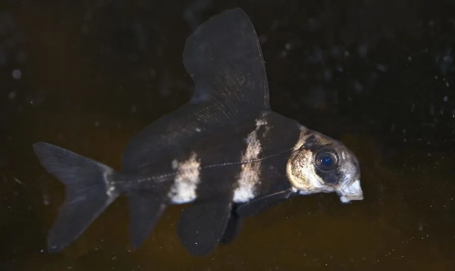

鱼类 · 动物界
胭脂鱼 Myxocyprinus asiaticus

中国长江流域特有的大型淡水鱼，背鳍高耸如帆、体侧有一条胭脂红纵带，幼鱼与成鱼体形差异极大，因水坝阻隔而数量锐减。
- 分类
- 门脊索动物门纲硬骨鱼纲目鲤形目科亚口鱼科属胭脂鱼属
- 栖息环境
- 长江干流与支流的石质江段、湖泊与水库，繁殖期上溯至砾石河段
- 地理分布
- 中国长江流域，包括干流、洞庭湖、鄱阳湖及部分支流
- 保护级别
- IUCN 易危（VU）；中国国家二级保护动物
物种志
胭脂鱼是体型较大的淡水鱼，成年体长可达 60–100 厘米，体重 10–20 千克。体形随年龄变化明显：幼鱼体高而侧扁，背鳍高大如帆，体侧有三条深色宽纵带，呈褐红与银灰相间；成鱼身体延长、背鳍相对降低，体色转为胭脂红或橙红，尤以繁殖期雄鱼最艳，因此得名“胭脂鱼”。头小，吻钝，口下位呈马蹄形，唇厚，具须一对。
它们是中国长江流域的特有种，分布于长江干流与支流、洞庭湖与鄱阳湖等水域，偏好水流较急、底质多石的江段，也进入湖泊育肥。食性以底栖的螺、蚌、水生昆虫与藻类为主，靠下位的口刮食附着物。繁殖期在春季，成鱼溯江上溯到上游产卵场，卵黏附于砾石。由于葛洲坝等水利工程阻断洄游通道、过度捕捞与水域污染，其野生种群大幅下降，现为中国国家二级保护动物，并已实现人工繁殖与增殖放流。
形态与习性
- 体长成体可达 60–100 cm，体重 10–20 kg
- 食性螺、蚌、水生昆虫与附着藻类
- 繁殖春季上溯至砾石河段产卵，卵黏附于石面
- 体形变化幼鱼体高、背鳍如帆；成鱼身体延长、背鳍降低
- 体色成鱼转胭脂红，繁殖期雄鱼最艳
- 种群现状野生种群大幅下降，依赖人工繁殖与放流
- 寿命可达 25 年以上
趣味知识
- 胭脂鱼小时候背鳍高得像一面帆，长大后背鳍反而变低、身体拉长。
- 成年雄鱼在繁殖期通体胭脂红，是长江里颜色最艳的鱼之一。
- 它的嘴长在头的下方，像一把小铲子，用来刮食石面上的螺和藻。